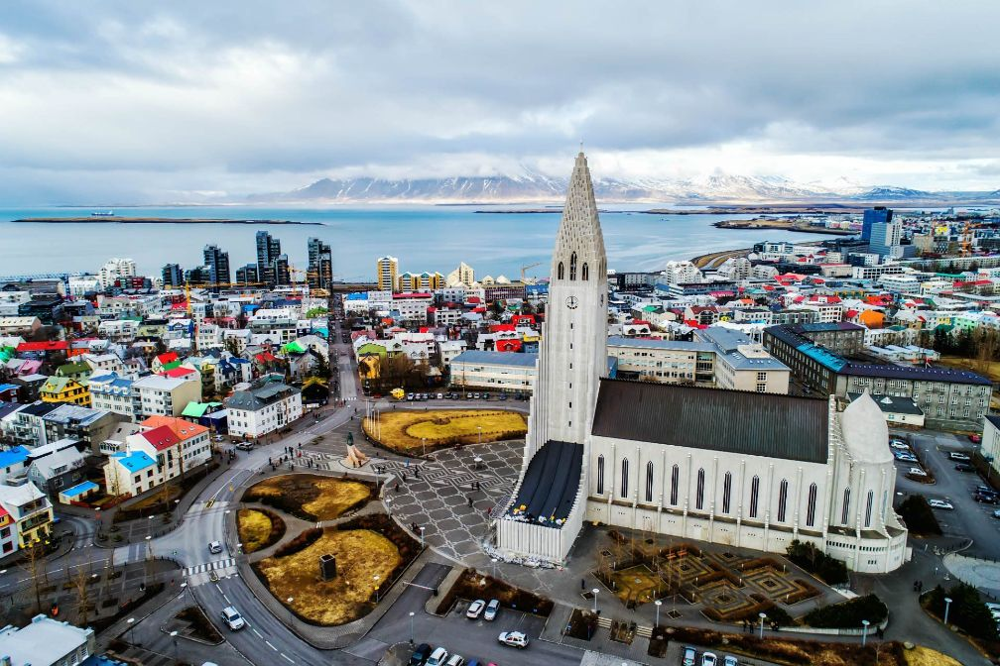

ПОНУДА ЦЕЛА ГОДИНА

РЕЈКЈАВИК И СЕВЕРНАТА СВЕТЛИНА
Рејкјавик, Исланд
16.08 - 22.08
Откријте ја магичната убавина на Исланд, земја на вулкани, гејзери, водопади и неверојатни природни пејзажи. Истражете го шармантниот Рејкјавик и уживајте во незаборавната можност да ја видите северната светлина. Патувањето е совршена комбинација од природа, авантура и уникатна исландска атмосфера.
ИСЛАНДСКА АВАНТУРА
Главниот и најголем град на Исланд, познат по својата карактеристична скандинавска архитектура, живописните улици и прекрасното крајбрежје. Градот нуди интересна комбинација од модерна култура, исландска традиција, музеи, ресторани и кафулиња, а неговата компактна атмосфера го прави идеален за пешачко истражување.
Една од најпознатите туристички рути на Исланд, која ги поврзува некои од највпечатливите природни атракции на островот. Патувањето води низ гејзери, моќни водопади, вулкански предели и пространи пејзажи, создавајќи незаборавно искуство во исландската природа.
Една од најмагичните природни појави и едно од најочекуваните искуства на Исланд. Во вечерните часови ќе се упатиме надвор од градските светла, каде, доколку временските и природните услови дозволат, ќе имаме можност да го набљудуваме спектакуларното зелено и шарено небо на Aurora Borealis.
Откривање на драматичните природни предели на јужниот дел од Исланд, каде моќните водопади се среќаваат со црните вулкански плажи и суровото крајбрежје. Уникатниот контраст помеѓу вода, вулканска земја, океан и планински пејзажи создава едни од највпечатливите глетки на островот.
Една од најпознатите геотермални атракции на Исланд, препознатлива по своите топли, млечно-сини води и уникатното вулканско опкружување. Синиот лагун нуди совршена можност за релаксација и уживање во геотермалните води, опкружени со карактеристичниот исландски пејзаж.
Состанок со групата на аеродром во Скопје, 2 часа пред летот. Следува директен лет до Виена па следи диретен лет до Кефлавик и пристигнување на аеродромот. По завршувањето на аеродромските процедури следува организиран трансфер до Рејкјавик и сместување во хотел. По сместувањето е предвидено време за одмор и освежување. Попладнето следува прва прошетка низ околината и запознавање со Рејкјавик. Вечерта е слободна за вечера и индивидуални активности. Ноќевање во хотел.
Појадок во хотелот и организирано разгледување на Рејкјавик. Следува прошетка низ центарот на градот и разгледување на главните знаменитости, пешачките улици, градските плоштади и крајбрежјето. Предвидено е време за фотографирање и уживање во карактеристичната атмосфера на градот. Потоа следува слободно време за ручек, кафе, шопинг и индивидуално разгледување. Во вечерните часови, доколку временските услови дозволуваат, следува организирано заминување надвор од градските светла со можност за набљудување на Северната светлина. Ноќевање во хотел.
Појадок и организирано заминување кон познатата рута Golden Circle. Следува посета на најпознатите природни атракции во регионот, со разгледување на гејзери, водопади и впечатливи вулкански пејзажи. Предвидено е време за фотографирање и кратки прошетки на одбраните локации. Во текот на денот е предвидено слободно време за ручек и одмор. По завршувањето на разгледувањето следува организирано враќање во Рејкјавик. Вечерта е слободна за одмор и индивидуални активности. Ноќевање во хотел.
Појадок во хотелот и организирано заминување кон геотермалните предели на Исланд. Следува посета на Синиот лагун, со можност за релаксација и уживање во геотермалните води. Патувањето продолжува низ карактеристичните вулкански пејзажи и геотермални подрачја. Предвидено е време за фотографирање, одмор и уживање во природата. По завршувањето на посетата следува враќање во Рејкјавик. Вечерта е слободна за вечера и индивидуални активности. Ноќевање во хотел.
Појадок и организирано патување низ јужниот дел на Исланд. Следува разгледување на впечатливите природни предели, со посета на познати водопади и црни вулкански плажи. Патниците ќе имаат можност за фотографирање, кратки прошетки и уживање во уникатните исландски пејзажи. Во текот на денот е предвидено слободно време за ручек и одмор. По завршувањето на посетите следува организирано враќање во Рејкјавик. Вечерта е слободна за одмор и индивидуални активности. Ноќевање во хотел.
Појадок во хотелот и слободно време за дополнително разгледување на Рејкјавик. Патниците ќе имаат можност за прошетка низ градот, посета на продавници, кафулиња и ресторани, како и слободно време за индивидуални активности. Попладнето е предвидено за одмор и подготовка за вечерната авантура. Во вечерните часови следува организирано заминување надвор од градот, далеку од светлосното загадување, со можност за набљудување на Северната светлина, доколку временските услови и природните услови го дозволуваат тоа. Враќање во хотел и ноќевање.
Појадок во хотелот и одјавување согласно предвиденото време. По собирањето на багажот следува организиран трансфер до аеродромот. По пристигнувањето следува пријавување за летот и завршување на потребните аеродромски процедури. Потоа следи диретен лет до Виена, па директен лет до Скопје. По пристигнувањето и преземањето на багажот завршува организираното патување.